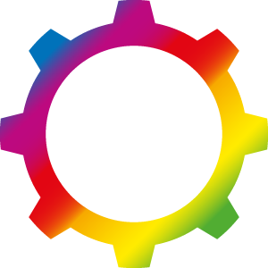

Mark your calendars for another great conference November 15 and 16 in Amsterdam! The first DO iOS 2015 was a huge success. So we're bringing it back for 2016, with an exciting, new line-up of the most well-known international iOS Gurus.
Now that we can use Swift in the backend, it is even more relevant to use a good architecture in order to maximize the amount of code that we can share between the frontend and the backend.
In this talk, I will start by covering briefly the architecture of a mobile app. Then, using that architecture as a reference, I will explain the parts that can be easily shared and the keys for an implementation that maximizes the chances of that sharing. I will also go through some scenarios in which sharing the code will not help us much.
With iOS10, Apple implemented a whole load of new features, but also some tweaks to existing ones, like in UICollectionView (and UITableView). With this presentation I will dive into the differences between iOS 10 and previous versions. I will demonstrate and show what the new possibilities are using live streams from Dutch television broadcast NPO, shown in a collectionview.
11:30 - ING: 1 + 1 = 1 - Nandini Chauhan
- Nandini Chauhan
This year the ING has been working on taking their banking app for the Dutch market global. In this presentation Nandini will talk about this journey and how the team at ING tackled some of the obstacles along the way.
This talk will give you insights into how Functional Reactive Programming can help you build apps faster by making it more easy to implementing common patterns such as networking failure UI feedback. I’ll discuss the way we build apps like RTL XL and Buienradar at Triple and how we create projects which are familiar to work on for all developers in our team.
Combining ReactiveCocoa, Moya and a JSON parsing libraries creates new ways of networking in iOS apps built with Swift. By creating UI elements which can connect with these library you gain the ability to implement common patterns.
Apple has introduced a new framework for notifications in iOS 10. This framework enabled developers to build extensions that provide awesome new ways for users to interact with apps at a moment's notice.
The talk will start off with an overview of iOS 10 notifications and how they are different from iOS 9. Next, I'll show how to implement the new Notifications framework and how to create a notification extension. Then I'll demonstrate how to implement a notification that enables a user to use a small part of your app without opening. Finally, I will provide some insights into how the audience can think of ways to enrich their notifications and boost engagement with the new Notifications framework.
As ViewControllers have the tendency to become massive over time, we’re looking for patterns to move responsibilities to other objects. Using Coordinators is one way to handle this problem. In this live coding session we we explore a protocol oriented way of implementing coordinators, using some new features of Swift 3.
Because this session will be performed completely in Swift Playgrounds on an iPad, it will also show that, while Playgrounds are fun to play around with, they are definitely more then a toy.
15:30 - More random talk: the consistent world of noise - Natalia Berdys
Chance permeates our human existence - but it’s our instinct to seek order in chaos. In this extended talk, we’ll dig deeper into the fishy realm of randomness, and when it’s just too unnatural for our apps - let’s bend it to our will by making it evolve into coherent patterns with the GameplayKit framework. We’ll use some of the newest iOS 10 APIs and procedural noise to generate harmonious digital worlds, landscapes and textures - a comforting way to mine some creativity from silicon chips.
Functional programming in Swift is all the rage, but many of the tools of functional languages don't translate easily to Swift. So much focus on lambdas and monads has caused us to overlook one of the most powerful lessons from decades of functional programming research: the power of strong types.
In this session we'll discuss what makes types weak or strong and how to build simple types that make whole classes of bugs impossible. We'll learn to tear over-complicated types apart and put them back together using simple rules. And we'll learn the basic vocabulary of types so we can talk about why to choose a struct or an enum, when to use an Optional, and how to fix common type mistakes in Swift.
17:00 - Closing keynote: the selfie developer - Steve Scott
In addition to the main DO iOS Conference Day, we’ll host a DO iOS University Day where Jorge Ortiz will explain more about the Patterns of Programming in Swift.
Who's it for?
This course is for programmers who know the fundamentals of the Swift Programming Language but haven't mastered the paradigms.
What you'll learn
This fast-paced workshop shows you how to take advantage of Swift features to write more robust code that is easier to reason about. Swift has been changing quickly over the past year. In this workshop you'll learn to embrace the latest Swift 3 conventions.
One of the strengths of Swift is that it can borrow the best from a multitude of paradigms. Swift stresses protocol oriented programming. We'll look at how to successfully use it and weave it together with OO and functional code into a readable and flexible architecture.
We assume that you are an experienced programmer who has spent some time looking at Swift but you aren't yet an expert in Swift. You understand most of the hows and whats of working with Swift and are looking for the whys and wheres.

Available Tickets
In addition to the main DO iOS Conference Day, we’ll host a DO iOS University Day when leading experts will explain the latest tech, step by step. (limited availability)
Last year developers absolutely loved DO iOS. You can watch the aftermovie or check out the link below to watch past presentations. And DO iOS 2016 promises to be even better!